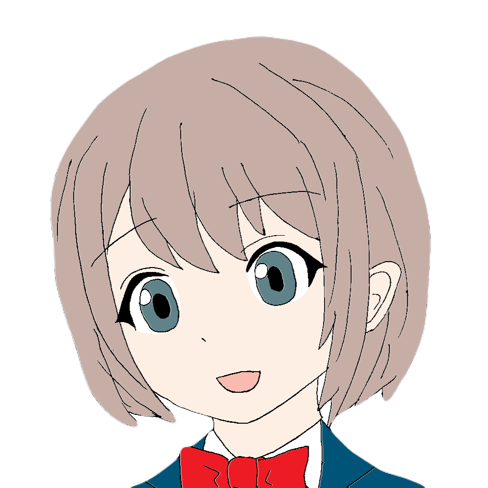
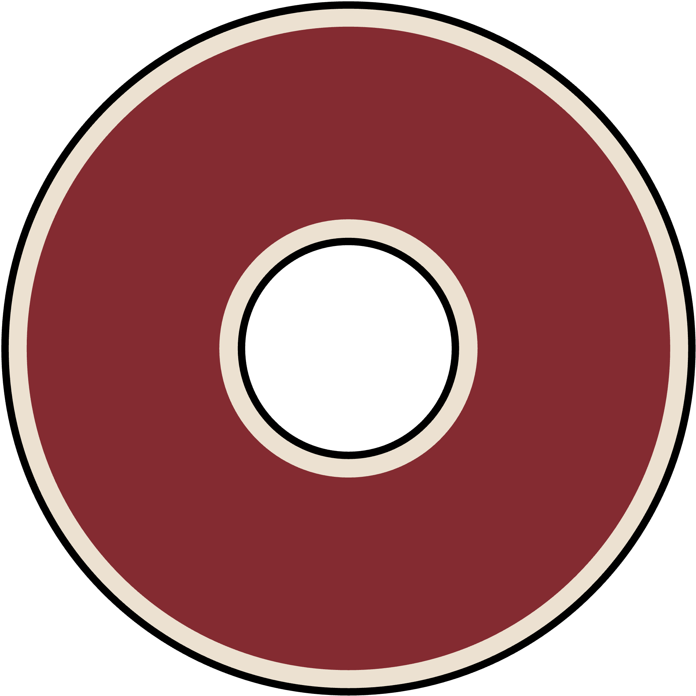

This website is written in Japanese.
追憶のキャレル
トップ ＞ 隠しページ
隠しページ
隠しページへようこそ
インターネットが家庭に普及し始めた1990年代から2010年頃、Htmlを駆使して個人サイトを作る文化がありました。
当時のサーバーでとくに有名なのは「Yahoo!ジオシティーズ」ですが、こちらはすでにサーヴィスを終了しており、
残念ながら2024年の今日においては、当時のサイトの多くが見られなくなってしまっています。
アクセスカウンターとキリ番ゲッター、BBS（掲示板）、流れる文字、マウスカーソルを追いかける星屑、相互リンク、バナー、「直リンクお断り」等々。
今ではほとんど見られないような、多種多様な文化がありました。
私のサイトも、初めの頃はこのような時代のものをウェイバックマシンに残る当時のサイトを参考にしつつ、取り入れていました。
しかし、どうしても動作が重くなったり、ソースコードが複雑になったりと、次第に億劫に。
それでも、何か一つくらいは当時の文化を取り入れたいと思って思いついたのが「隠しページ」でした。
※このページは、URLを知っている人、BBSからログインができた人、リンクに気づいた人しか開くことができません。
アイコン画像の変遷
ここでは、私のページのファビコンの秘密をお話ししましょう。

↑初代ファビコン（2022-2026）
かつて使っていたこのファビコンは、私が高校生の頃に作り、TwitterとかSNSのアイコンにしていたものです。
当時はよく「紙に書く→輪郭をペンでなぞる→スキャンして白黒BMPで保存→ペイントで色をつける」という、
何ともアナログなやり方で絵を描いていました（これもそのうちの一つ）。
アイコンとしては良かったんでしょうが、ファビコンで使うとほとんど潰れしまってよく見えないし、
中の人とはほとんど関係ない（まず性別が違う）立ち絵ということで、長年、変えたいと思っていました。

↑現在のファビコン（2026- ）
そういうわけで、2026年9月「1.簡単に作れて 2.私に因んだ 3.視認性のよいもの」をコンセプトに作成しました。
円形にしたのは、視認性が良いことと、制帽コレクターということでコカルデから。
色は、鉄ちゃんなので国鉄色から。地色はクリーム10号（＃ECE0D1）に、シックながらよく映える赤2号（＃842B32）を乗せたものです。
今回は、パワーポイントで作成しました。
Copyright © 追憶のキャレル, 2018- . All Rights Reserved.
First drafted Jun. 1, 2024
Last revised 3. Sep, 2026